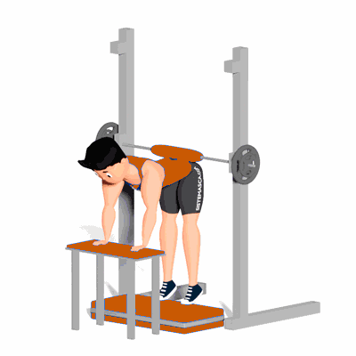

Panturrilha Burrinho no Smith

Esse exercício trabalha de forma intensa o fortalecimento e hipertrofia dos músculos da região da panturrilha.
Ficha Técnica
Tipo: Musculação
Grupo Muscular: Perna
Aparelho: Nenhum
Músculos: Nenhum
Como realizar
- De costas com o aparelho Smith, suba em cima de Step deixando o calcanhar para fora;
- Feito tudo isso, incline a coluna de modo que você apoie os braços em um banco e a lombar encoste na barra do smith;
- Assim, eleve os calcanhares o máximo que puder e retorne à posição inicial.
 RC STORE
RC STORE